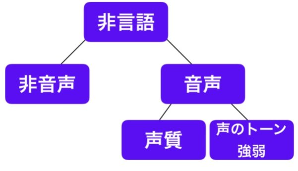
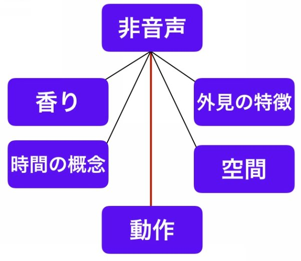

| 「伝わる人」の会話の法則: しぐさで嘘を見抜く 〜法則Series3〜 | |
| 佳那 塁 | |
| Rui Kana (2017) | |
目次
はじめに
第一章 書き言葉と話し言葉
第二章 非言語コミュニケーション
第三章 本心はどこにある？
おわりに
はじめに
本書を手にとって頂きありがとうございます。
この本は、『「伝わる人」の会話の法則』シリーズ第３弾となる【しぐさで嘘を見抜く】です。第２弾までとは違いコミュニケーションの闇の部分について触れていますが、基礎編・日常編を読んでいなくても理解できる内容になっていますのでご安心ください。
また本書をお読みになって著者自身に興味を持たれた方は、こちらも参考にしてみてください。
◆佳那塁 著作一覧
https://www.amazon.co.jp/B071ZLH16F
◆メルマガ登録はこちら
http://www.ruikana.com/s/touroku
第一章 書き言葉と話し言葉
私たちは日常生活の中で、周りの人たちと常に様々なコミュニケーションを取り合っています。
実際に言葉を交わすことに始まり、相手の表情や仕草などを通して何を考え何を思っているのかを判断しています。
この言葉でのやり取りを言語コミュニケーションと呼びますが、言語と言っても世界には３０００から１万もの言語があると言われています。
特にインドでは１０００を越える言語があり、日本のように１つの言語がどこでも通じる国というのは非常に珍しいケースです。
この本の読者はほとんどが日本語を話していると思うので、日本語という言語について少しだけ触れておきましょう。
言葉というのは難しいもので、これは実際の会話を文字に書き起こしてみるとよくわかります。
次の文章をご覧ください。
Ａ「おはようございます。いつも早いですね」
Ｂ「ええ。朝に弱いもので」
いつも早いのであれば「朝に強い」はずですよね。それなのに返答が「朝に弱いもので」。
これは遅刻した人に対する皮肉だとわかるでしょう。ですがその会話を文字にすると、全く別の意味に受け取られる可能性もあります。
このような話し言葉や書き言葉が言語コミュニケーションで、ジェスチャーなどでは表現できない内容を伝える事ができます。また本書の内容は、私がいくらこの場で身振り手振りを交えて説明していたとしても、残念ながらあなたには伝えられません。
これが言語コミュニケーションです。
そしてこの言語以外のコミュニケーションの事を、非言語コミュニケーションと呼びます。
「人間がコミュニケーションを行う際には９３％も非言語コミュニケーションに頼っている」 と言われますが、言葉の重要性も無視はできないでしょう。
現に私は今、こうして言葉であなたに伝えているのですから。
第二章 非言語コミュニケーション
ではその言葉を使って、非言語コミュニケーションについての話をしていきます。
次の図を御覧ください。

この非言語コミュニケーションの中の「声質」では、性別や年齢、体調なども伝わります。また声の地トーンや強弱では、重要なポイントを強調したり、意味を伝わりやすくする作用があります。
では「非音声」とは何なのでしょうか。
それは体つきや目の色などの「外見の特徴」、国の違いや親密さなどの「空間」、年齢や重要度の違いによる「時間の概念」。
生活習慣や個人の演出による「香り」、そして表情や身振り手振りなどの「動作」を表します。

少し難しい話になってしまいましたが、コミュニケーションには２種類ある。そして非言語コミュニケーションはさらに細かく分かれている。
本書ではその中でも「表情や身振り手振りなどの動作」を学んでいきましょう。
相手が見せる表情や仕草が、一体どんな感情を表しているのか。
それを少しでも知っておく事で、あなたの人間関係は今より遥かにスムーズになるでしょう。
コミュニケーションについて深く研究した１人の心理学者が、ある有名な言葉を残しています。
「人はコミュニケーションしないでいる事はできない」
と。
私たちは何をしていようとも、一言も喋らずとも、絶えず何かを伝え続けています。
喋らない。
それも１つのメッセージです。
例えばあなたが職場に行った時、誰にも挨拶をせず目も合わせず、話しかける事も笑いかける事もしなければ、それは「私はとても機嫌が悪い」と言っているのと同じです。
第三章 本心はどこにある？
私たちはほとんどの身振りや手振りなどの仕草を無意識に行っていますが、無意識故に、それをコントロールする事は難しいのです。手足の動きなどを意識的にコントロールするのは、そこに相当の意識を向けなければなりません。
こういった非言語コミュニケーション、いわゆる身体言語が「言葉より本心に近い」と言われるのはこのためです。
余計に難しくなってしまったかもしれません。
まとめてみましょう。
「言葉でいくら嘘を突き通しても、身体に現れないようにするのはかなり難しい」
この一文でスッキリしましたね。
あなたも私も、言葉だけでなく全身を使って絶えずコミュニケーションし、頭で考え、そして話しています。
ではある何かの感情が生まれた時、その次に現れるのは言葉と動作、どちらが先だと思いますか？
これは著名な学者の研究結果などではなく、私のこれまでの観察の結果なのですが、
「感情」---「仕草などの動作」---「言葉」という順です。
これはどんな人にも共通する順序と言えるでしょう。
例えば、
Ａ 何かにとても傷ついて悲しい時。
１．「自分はすごく悲しんでいる」と脳が気づく
２．涙が溢れてテッシュを掴む
３．「ああ、もう・・・」と言葉が出る
あるいは、
Ｂ 数年来の友人を街で見かけた時。
１．「久しぶりに会えて嬉しい」と脳が気づく
２．無意識のうちに笑顔になる
３．「会えて嬉しい！」と言葉が出る
この順序と流れは、普段は特に意識しない限り変わることはありません。絶対に。
そして更に重要な事があります。
２の「動作」には本音が出てしまいますが、３の 「言葉」では嘘をつく事が可能 だという事です。
Ｂの例でいうと、相手が自分の所に近づいて来て「会えて嬉しい！」と言った後に笑顔を浮かべるようであれば、嬉しいフリをしている、つまり嘘をついているという事です。
「会いたくもない相手だけど、目が合ったから笑顔で挨拶くらいしておこうか」
こう考えている可能性は大いにあります。
「会えて嬉しい」
「あなたと一緒にいられて幸せ」
「心から感謝しています」
「本当に美味しかった」
このような喜びや感謝を伝える言葉ほど、動作と実際の言葉の間には差を生み出しやすいのが人間です。
つまり喜怒哀楽のうちの「喜び」の感情ほど、偽って嘘をつく事が簡単というわけです。
本来は一番素直に伝えるべき言葉が、一番簡単に嘘をつく事ができるというのは衝撃です。
せめてあなたには、喜びの感情は率直に伝えられる人であって欲しいと願っています。
おわりに
最後までお読み下さりありがとうございます。
本書では相手の動作から本心を読み取る、簡単な例をご紹介しました。
他にも表情、声色、身振りや手振りなど様々な方法があります。
こちらは別の本でご紹介していますので、興味のある方は是非手に取ってみて下さい。
あなたの明日からの人間関係が、ほんの少しでも良いものになる事を祈って。
「伝わる人」の会話の法則 Ⅲしぐさで嘘を見抜く
著 者 佳那塁（かな・るい）
発行者 佳那塁
発行日 ２０１７年７月２６日